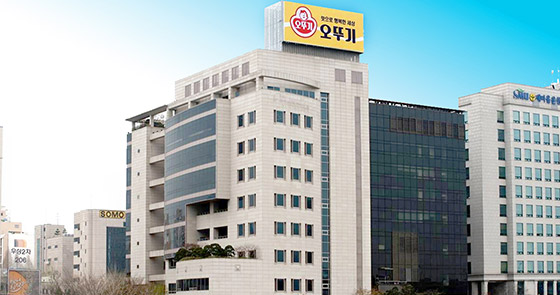
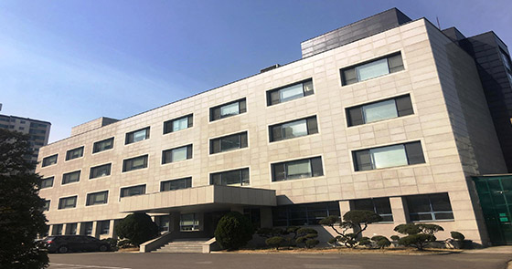
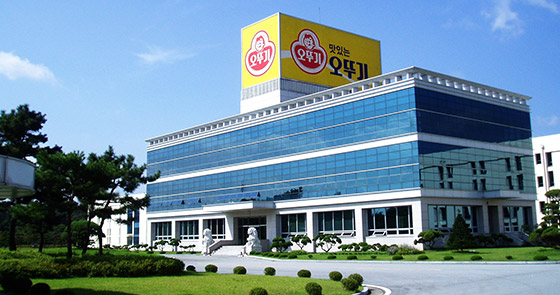
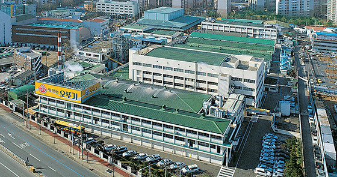
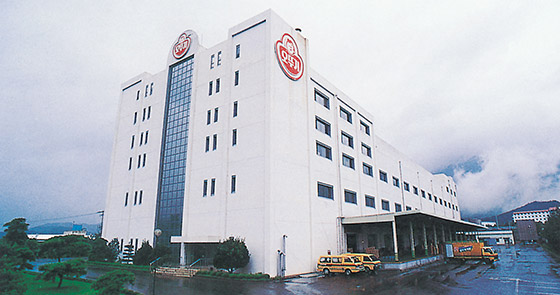

사업장 소개
- 국내 사업장
- 참신한 발상과 급변하는 소비자의 기호에 빠르게 대응하며 제품에 대한 소비자 욕구를 신속하게 수렵하고 또 예측하면서<
언제나 새로운 식품문화 개발에 노력하고 있습니다.
국내 사업장 현황
- 
오뚜기 센터
- (135-851) 서울특별시 강남구 영동대로 308
-
(주)오뚜기의 전사를 총괄하는 미래전략의 구심점 역할 (2010년 3월 입주)
- 
오뚜기 중앙연구소
- (14060)경기도 안양시 동안구 흥안대로 395번길 49(평촌동)
-
최신의 정보설비와 5,000여권의 전문서적, 유화 및 균질화 설비, 레토르트 살균기 등 최적의 연구 환경을 갖춘 최첨단 연구소. 국제시험기관 인정 제도인 KOLAS를 취득하여 국제적인 공신력을 가진 공인시험 및 검사기관
- 
대풍 공장
- (369-820) 충청북도 음성군 대소면 대풍산단로 128
-
21세기형 공장으로 HACCP에 적합한 공장, 물류 동선이 효율적으로 설계된 공장, 완전한 전산화를 통한 첨단 시스템을 자랑하는 대풍공장. 대풍공장은 2001년 8월 30일 대지면적 104,853.1㎡에 건축면적 26,914.0 ㎡으로 준공하여 현재 케찹, 마요네스, 3분류, 쌀, 밥 등을 생산하고 있습니다. 21세기형 HACCP 공장으로 위생수준별 Zone을 일반구역 청색, 준청정구역 적색, 청정구역 녹색으로 구분하여 관리하는 것뿐만 아니라 창문이 없는 밀폐형 공장, 창문, 벽 등의 경사와 턱을 없애 먼지가 쌓이지 않도록 건설되어 운영되고 있습니다.
- 
안양 공장
- (431-070) 경기도 안양시 동안구 흥안대로 405 (평촌동 160)
-
유지, 쨈, 레토르트식품 등 시장 점유율과 품질에서 1등 제품을 생산하는 안양공장
안양공장은 1972년 6월 경기도 안양시 동안구 평촌동 160번지에 카레 공장이 준공된 이래 수 차례 증설을 거쳐 오늘에 이르고 있으며, 생산하고 있는 제품은 500여 종류에 달하고 있습니다. 안양공장에서 생산하는 대부분의 제품들은 품질이나 시장점유율 등 모든 면에서 1등 제품들이며 안양공장 사원들은 일치 단결하여 최고의 품질을 생산하는데 전력을 다하고 있습니다. 최고 품질의 제품을 생산하기 위하여 개선에 힘쓰는 분임조 활동, 5S운동, TPM활동, 기계 정지 제로화 운동, 클레임 제로화 운동, 안전 사고 제로화 운동 등을 꾸준히 추진하고 있습니다.
- 
삼남 공장
- (689-813) 울산광역시 울주군 삼남면 반구대로 149
-
케챂, 마요네스, 식초 등을 생산하는 영남권의 물류 거점이자, 수출제품의 제공 창구 삼남공장
오뚜기의 삼남공장은 1992년 7월 대지 19,647㎡에 건평 13,630㎡ 규모의 4층 건물로 건립되었으며, 현재 케찹, 마요네스, 식초, 물엿 등을 생산하고 있습니다. 생산 효율성을 극대화할 수 있는 최신 생산 설비를 갖추고 있는 삼남공장은 안양공장에서 생산하고 있는 주요 제품을 지방에서 분산해 생산하는 기능을 수행하고 있습니다. 또한 영남지역의 물류 거점 기능까지 담당함으로써 이 지역에서의 제품판매를 효율적으로 지원하고 있습니다.
최근에는 대 러시아 수출이 활기를 띄게 되어 수출을 위한 전진기지로서의 역할도 수행하고 있습니다.